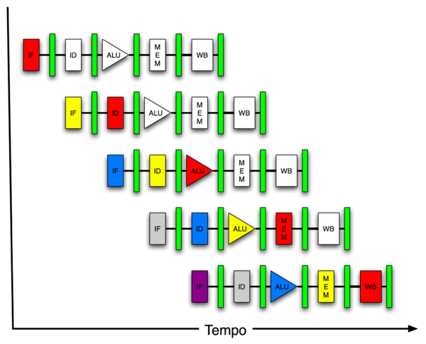

MIPS is a pipelined architecture. Instructions are executed in a pipeline to keep the processor as busy as possible. The diagram below is a 5-stage pipeline:
In the
Instruction Fetch stage an instruction
is a read from instruction memory.
In the Instruction Decode/Register Fetch stage an instruction is
decoded and values from source registers are read.
In the Execute/Address Calculation phase the processor does its job (ALU unit).
In the Memory Access stage, data memory is read from or written to.
The final stage is a write back to target registers.
Under perfect conditions we want the pipeline to behave as follows:

In a pipelined design every stage in the pipeline takes the same number of clock cycles. Not all instructions use all 5 stages of the pipeline; e.g., a store instruction does not use the WB (write back) stage. However, if each stage takes 1 clock cycle (cc), an instruction should not take MORE than 5 clock cycles. Assuming 1 cc/stage, the pipeline will behave as shown below during the execution of 6 instructions to compute the twos complement of 82.
NOTATION. IF: Instruction Fetch ID: Instruction Decode/Register Fetch ALU: Execute/Addr Calculation MA: Data Memory Access WB: Write Back to Registers
cc1 cc2 cc3 cc4 cc5 cc5 cc6 cc7 cc8 cc9 cc10....
ori $8, $0, 82 IF ID ALU Mem WB
nor $8, $8, $0 IF ID ALU Mem WB
ori $9, $0, 1 IF ID ALU Mem WB
addu $8, $8, $9 IF ID ALU Mem WB
ori $7, $0, 82 IF ID ALU Mem WB
addu $a0, $7, $8 IF ID ALU Mem WB
Without pipelining the above 6 instructions would take 6*5=30 clock cycles. With pipelining the 6 instructions take 9 clock cycles.
PROBLEMS. Pipelining has a problem if one or more stages in the pipeline require more than 1 clock cycle. When this occurs the pipeline *stalls* until the offending stage completes. Branch instructions stall the pipeline because the address in the instruction itself (where to branch to) must be resolved in the Instruction Decode stage before the next instruction can be fetched. The diagram below demonstrates the problem with branch instructions. Note that the ALU is idle in clock cycle 4, clock cycle 5, and clock cycle 6 (cc4, cc5, cc6).
cc1 cc2 cc3 cc4 cc5 cc5 cc6 cc7 cc8 cc9 cc10....
beqz $t0, somelabel IF ID ALU Mem WB
or $t0, $t1, $t2 --- --- --- IF ID ALU Mem WB
add $t2, $t3, $t2 IF ID ALU Mem WB
add $t2, $t2, $t3 IF ID ALU Mem WB
The '---' represents the time lost (3 clock cycles) on waiting until the processor can compute whether to take the branch or not. Until that is done, the address of somelabel cannot be loaded into the program counter. Thus, the next instruction cannot be fetched and the pipeline is stalled. These ALU clock cycles are completely wasted especially if the branch is NOT taken. Since the majority of branches are, in fact, not taken, it is better to assume this and go ahead and fetch the next instruction after the branch (this slot is called the fall-through slot). This design is called a branch delay. Loading an instruction into the delay slot is done to improve the efficiency of pipe-lined processors where every branch means 3 clock cycles in which the CPU is idle.
MIPS architecture supports a delay slot after branch instructions and after load instructions. MIPS is RISC but not all RISCs make use of a delay slot. PowerPC and ARM do not have a branch delay slot. Most modern processors (even CISC) are pipelined.
In MIPS the delay slot instruction is in the fall-through slot. It is also possible to put an instruction from another location into the delay slot. The compiler makes an educated quess as to what to load the slot with. (You can often do better than the compiler since you are writing the code and understand expected behavior.) The branch delay slot is filled about 60% of the time by the compiler by something other than a no-op. About 80% of instructions in branch delay slots are useful (a useful instruction is something other than a no-op). Bottomline is that roughly 50% of slot instructions are useful and this number results in a speedup for the pipeline of generally around 35%.
Roughly 20% of load delay slots are filled by the compiler with something other than a no-op.
When coding in MIPS assembly you are the compiler. You must decide what to do with the branch/load delay slots.
lw $s0, 4($0)
add $s2, $s0, $0
loop:
addi $s0, $0, 1
add $s1, $s0, $0
bne $s0, $s2, loop
addi $s2, $0, 1
sll $zero, $zero, 0